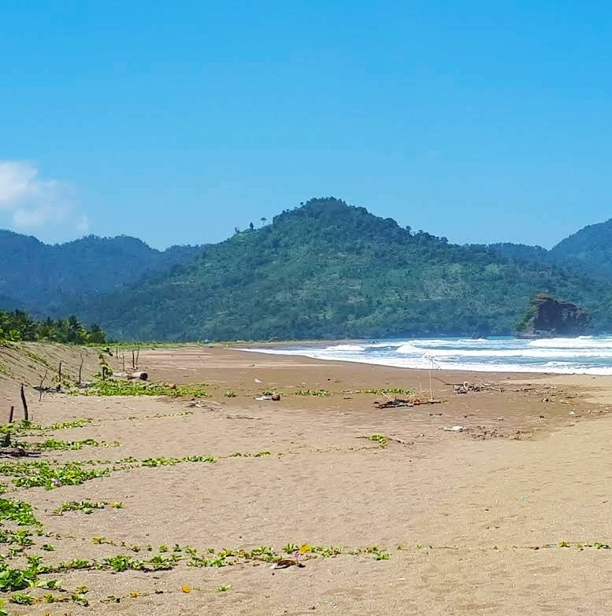
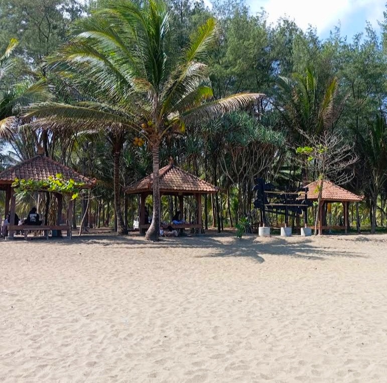

Pantai Taman Kili-Kili
Pantai konservasi penyu di Trenggalek yang menawarkan keindahan alam, pasir lembut, dan suasana damai khas pesisir selatan.


Deskripsi
Pantai Taman Kili-Kili terletak di Desa Wonocoyo, Kecamatan Panggul,
Kabupaten Trenggalek, Jawa Timur. Pantai ini dikenal sebagai kawasan
konservasi penyu yang dikelola oleh masyarakat setempat bersama
relawan lingkungan.
Suasana yang tenang dan alami menjadikan pantai ini cocok untuk
berwisata sambil belajar tentang pelestarian satwa laut. Hamparan
pasir keemasan dan udara segar pantai selatan membuat pengalaman di
Pantai Taman Kili-Kili semakin berkesan.
Jam Buka
Setiap Hari
Pukul 06.00 – 17.00 WIB
Harga Tiket Masuk
- Dewasa: Rp5.000/orang
- Anak-anak: Rp3.000/orang
- Parkir: Rp3.000 (motor), Rp5.000 (mobil)
🌴 Aktivitas Menarik
- Melepas tukik ke laut: Aktivitas utama di Pantai Taman Kili-Kili yang menarik wisatawan.
- Berkemah: Nikmati malam di tepi pantai sambil mendengar deburan ombak.
- Fotografi alam: Banyak spot foto menarik dengan latar pantai dan konservasi penyu.
- Menikmati keindahan sunset: Momen matahari terbenam di Pantai Kili-Kili sangat mempesona.
🏖️ Fasilitas
- Area parkir: luas dan dekat dengan bibir pantai.
- Toilet & kamar bilas: tersedia di area utama.
- Warung & gazebo: menyediakan makanan lokal dan tempat bersantai.
- Pusat edukasi konservasi penyu: tempat belajar tentang pelestarian penyu laut.
Lokasi
Pantai Taman Kili-Kili berada di Desa Wonocoyo, Kecamatan Panggul, Kabupaten Trenggalek, Jawa Timur. Aksesnya sekitar 3 jam perjalanan dari pusat kota Trenggalek melalui jalur Panggul yang berkelok namun indah.